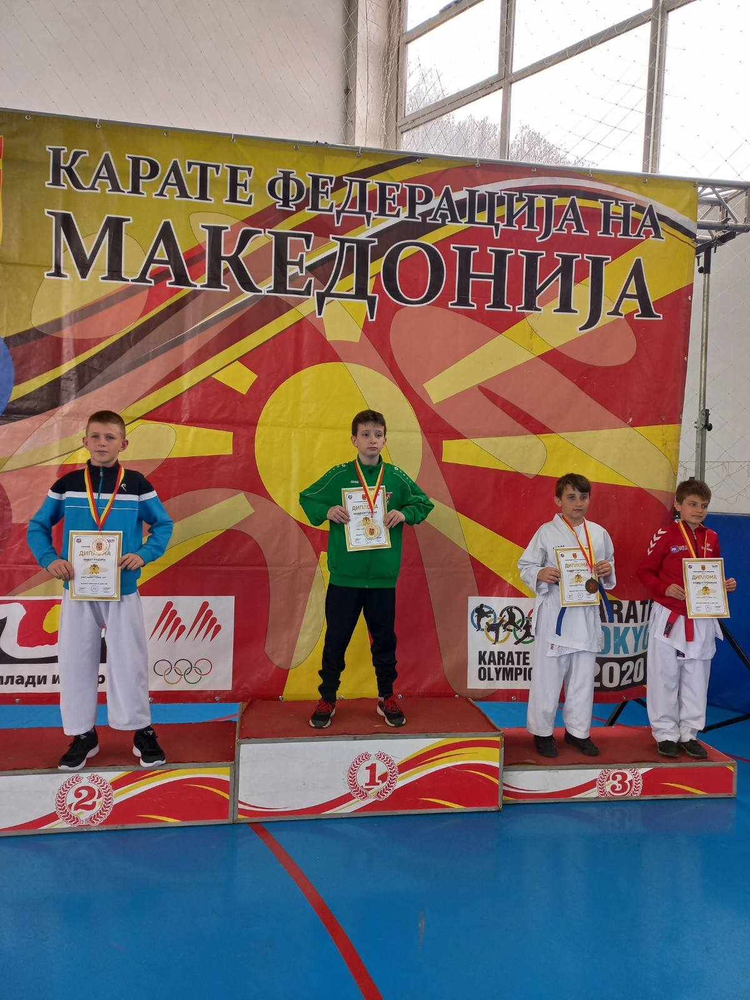

Карате натпревари
| Настан | Година | Поставување |
| Metalurg competition | 2019 | 3то место  |
| International championship | 2021 | 2ро место |
| Solidarnost open | 2021 | 1во место |
| Struga open | 2021 | 1во место |
| Metalurg competition | 2021 | 1во место |
| Balkan championship | 2021 | 5то место |
| Tetova open | 2021 | 1во место |
| Kjustendil open | 2022 | 3то место |
| Grand prix open | 2022 | 3то место |
| International championship | 2022 | 1во место |
| Metalurg friendly competition | 2022 | 1во место |
| Montenegro open | 2022 | 4то место |
| Balkan championship | 2022 | 4то место |
Натпревари во кошарка
| Настан | Година | Поставување |
| Final | 2022 | 1во место |
| IBC Belgrade | 2022/2023 | 1во место |
| IBC Belgrade | 2023/2024 | 4то место |
Macedonian
English
Македонски
Français
Deutsch

@kirilcvetkovski8
Кошаркарски профил
Кирил Цветковски е македонски кошаркар од Скопје роден на 03.04.2012,
на висина од 159cm/5,2Ft и 41kg/90pounds.Кирил игра за БК Феникс како
шпиц го носи бројот 7. Настапи Кирил во многу натпревари.Кирил и
неговиот клуб имаат многу победи во Македонската категорија У12
освојувајќи едно финале во сезоната 2022/2023. Тој постојано тренира
со својот тренер. Најновото натпреварување беше ИБЦ натпревар во
Белград каде Феникс го освои 4то место.
Карате профил
Кирил 4 години се бореше со карате во карате клубот КК Металург што беше меѓународен шампион за 2021 година во категоријата до 40 килограми 2012. Во 2021 година Кирил и неговиот клуб отидоа на многу натпревари како балканското првенство за деца и многу повеќе. Во 2020 година беше на меѓународното првенство на Македонија каде го освои 2. место.Во 2020 и 2021 година на Балкан првенства Кирил ги освои 4то и 5то место.Кирил се откажа од каратето во летото 2022 година.Последниот натпревар на Кирил во карате беше Балканското првенство за деца 2022 година.
Кирил
